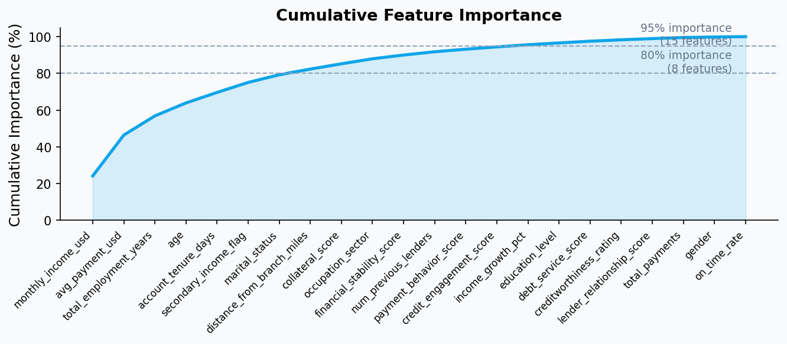

Model
explanations.
Agenda
What your model learned
Submit, poll, trim
Three things you'll leave with
Call get_feature_importance() and rank the features
Global importance ranking via get_feature_importance, the cumulative importance curve, and the importance-driven feature-trimming experiment.
Run it async — submit and poll
submit_feature_importance_task() returns a task id immediately. poll_feature_importance_result() returns the importance scores (an ndarray) when it is ready. The same shape shows up in Modules 05 and 06.
Validate feature cuts on holdout AUC
Rank by importance, trim to top N, retrain, measure the delta. Importance tells you what the model used; the experiment tells you what it needed.
Which features
did the work?
get_feature_importance(X) returns one ranked frame — global importance, with an async twin for big jobs.
Feature importance puts a number on each feature's pull.
For each feature, NEXUS returns a single non-negative importance score over the holdout you pass in. Higher means the model relied on that feature more. The result is a flat ndarray with one entry per column — ranking is a one-line zip with X.columns.
NEXUS computes importance from the trained model directly — no extra library, no kernel selection, no background dataset configuration. Pass the holdout you care about to get_feature_importance(X) and the scores come back.
one number
per feature
is the
ranking
Each score is non-negative — one entry per column, in your column order. Pair the scores with X.columns and sort to rank what the model relies on. This is a global view across the whole holdout.
across the model.
get_feature_importance(X) reads the model.
# reload the enriched Module 03 model nexus = NEXUSClassifier() nexus.load_model(ENRICHED_MODEL_ID) # synchronous importance — blocks until results arrive importance = nexus.get_feature_importance(X_holdout) # pair the flat ndarray with column names and sort importance_df = pd.DataFrame({ "feature": X_holdout.columns, "importance": importance, }).sort_values("importance", ascending=False) # → one row per feature, sorted by importance
The call returns one ranked frame.
get_feature_importance(X) returns a flat ndarray of importance scores aligned to your column order. Pair with X.columns to build the ranked frame the rest of the module uses.
What the model relies on, on the record.
In regulated lending you have to document what drives the model: which features carry the most weight, and evidence that prohibited or proxy features are not dominating. A global importance ranking is exactly that artifact — a model-level record you can put in the file and defend in review.
NEXUS returns global feature importance — one ranked score per feature. It does not produce per-record (local) explanations; for instance-level “why this borrower” reasoning you would layer on a separate technique.
Document
what the model
relies on
get_feature_importance(X) returns a flat ndarray of importance scores aligned to your column order. Pair with X.columns to rank, plot, and drive the trim experiment in Part 5.
documented for review.
Submit, then poll.
# submit — returns a task id immediately, no blocking task_id = nexus.submit_feature_importance_task(X_holdout) print(f"submitted: {task_id}") # save this id # poll — returns None while running, the scores when done result = None while result is None: result = nexus.poll_feature_importance_result(task_id) if result is None: time.sleep(15) # check again in 15s # → same flat ndarray the sync call returns
Submit returns now. Poll when you're ready.
The poll returns the same flat ndarray as the sync call — pair it with X.columns for a ranked DataFrame. The next slide reads this pattern as the through-line for the rest of the workshop.
Submit. Poll. Keep moving.
The async twin.
# submit — returns a task id immediately, no blocking task_id = nexus.submit_feature_importance_task(X_holdout) print(f"submitted: {task_id}") # save this id # poll — returns None if still running, the scores when done result = None while result is None: result = nexus.poll_feature_importance_result(task_id) if result is None: time.sleep(15) # check again in 15s # in production: persist task_id, poll from a scheduled job.
The same shape runs the rest of the workshop.
submit + poll is how Modules 05 and 06 train and predict in the background. Once you have the pattern here, you have it everywhere — training, prediction, explanations, all non-blocking.
The analyst scores rank lower than you would guess.
The enriched feature frame from Module 03 includes six assessment scores — creditworthiness_rating, payment_behavior_score, financial_stability_score, lender_relationship_score, credit_engagement_score, debt_service_score. Each one was hand-crafted by credit analysts. You would expect them to dominate.
They do not. Raw demographic features and behavioral aggregates like monthly_income_usd and on_time_rate carry more signal. The six curated scores collectively account for a small slice of total importance.
Structured
judgment isn't
always the
best signal
The model extracts more signal from the un-distilled behavior than the analysts condensed into summary scores. That is not a verdict on analyst judgment — it is a reminder that expert priors and model priors can differ, and the data usually sides with the model.
small share of importance.
What the model used is not what the model needs.
Importance scores measure contribution when the model had every feature available. A column near the bottom of the ranking looks disposable. But drop it and retrain — the model can redistribute its reliance across other features, and the AUC can move more than the low importance suggested.
The only honest test is to retrain on the trimmed frame and compare holdout AUC. That is why the next slide runs an experiment, not just a cut.
'What it
used'
≠
'what it
needs'
Importance ranks the model you already have. Retraining measures the model you would build without those columns. Nonlinear interactions mean the two answers can differ — sometimes sharply.
Rank. Trim. Retrain. Compare.
Importance scores tell you what the model used when it had everything. They do not tell you what happens if you retrain without the low-signal columns.
The experiment is four steps: sort by importance, select the top N, retrain a fresh NEXUSClassifier on the slim frame, compare holdout AUC to the 22-feature baseline. Test N = 15, 10, 5. The delta tells you which model ships.
If the AUC
delta is under
0.005, ship lean
Smaller feature sets cost less to collect, less to monitor, and less to explain. If the AUC holds, the leaner model almost always wins.
validated on holdout AUC.
Where does the signal live?

Steep early
means
concentrated
signal
A curve that climbs fast and flattens — about a third of the features (8 of 22) carry 80% of the weight — is a concentration signal. Your model leans on a small handful of inputs. That is cheap to serve; it is also fragile to drift in any of them.
A flatter, more gradual curve spreads the load across many features. Robust to any one source failing; more work to monitor.
what breaks the model.
Trim the
frame.
Keep the
AUC.
You have the importance scores (an ndarray) and a ranked importance_df.
Find the leanest model that still holds the baseline AUC.
Sort importance_df, take the top 15, retrain a fresh NEXUSClassifier on that slim frame.
Repeat for top 10 and top 5. Record AUC and delta against the 22-feature baseline for each.
Plot feature count vs AUC. Look for the point where the curve bends — that is your cut.
In one sentence: how many features, and why. Paste into the notebook's Your call cell.
Three takeaways
One call, one ranked frame
get_feature_importance(X) returns a flat ndarray of importance scores. Pair with X.columns to rank, then trim the long tail and re-fit a slim model.
Submit + poll is the shape
submit_feature_importance_task, poll_feature_importance_result. The same pattern runs training and prediction in Modules 05 and 06. Learn it once, reuse it everywhere.
Trim, then validate
Importance scores inform feature selection. Holdout AUC decides it. Always retrain on the trimmed frame before you commit to a cut.